幫工作室選定，定位在中階的電腦機型，車樂美 Janome DC6030，這位新成員終於來到工作室了。
準備來開箱嘍！
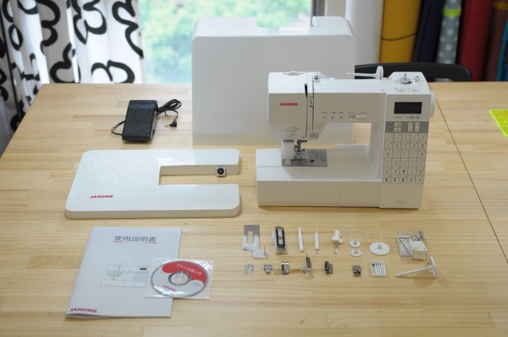
小心翼翼的拆封擺好，先來個機身與配件大合照
(說明書是中文的喔)
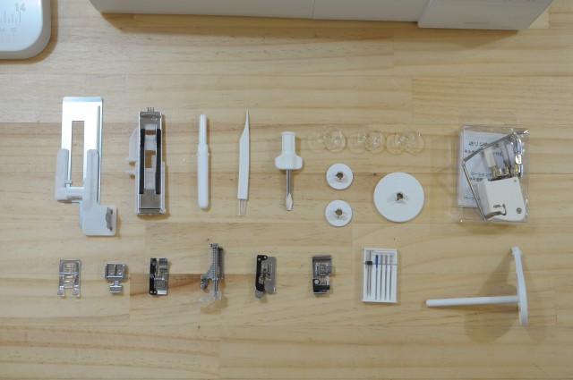
原廠付的配件和壓腳很完整，己經很足夠使用了
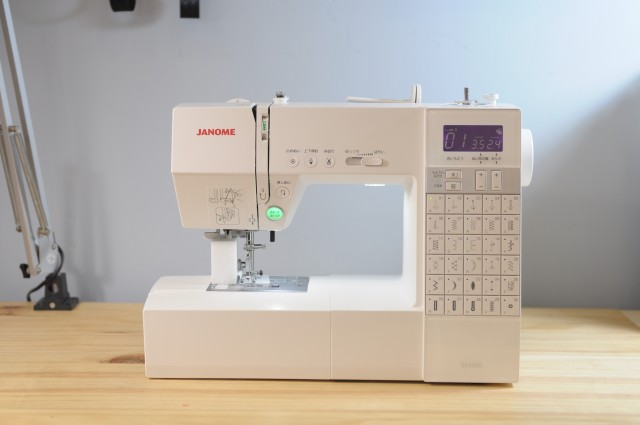
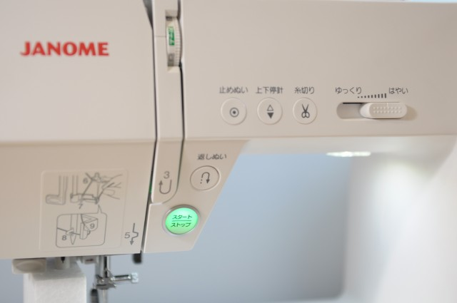
按鈕的設計相當明瞭且細致，主要的手控開始鈕，還會發出可愛的粉綠色燈光，質感完全破表了
整體霧面機殼，配上右下方的亮面壓克力，低調的寫上型號DC6030，我就愛這一味
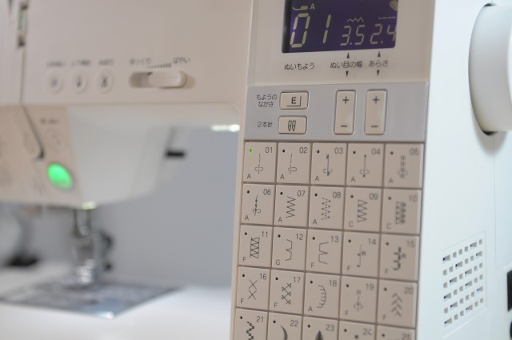
機身右側巧妙的融入整體造型，將所有30組花樣按鈕直接拉在機身上，不必用數字對照圖案表，切換花樣相當直覺快速，這麼多按鈕不但沒有破壞它的設計感，反而更增加它的細膩度，這設計功力真是很強大呀
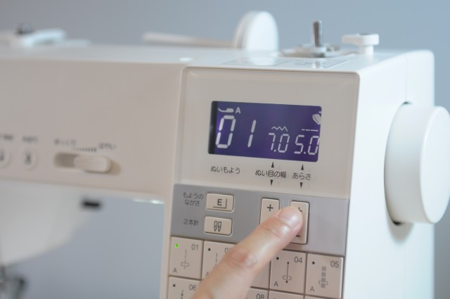
右上方的LCD面板，超愛它的灰紫色冷光，另外它的可調針幅最大可到7，針距最大5
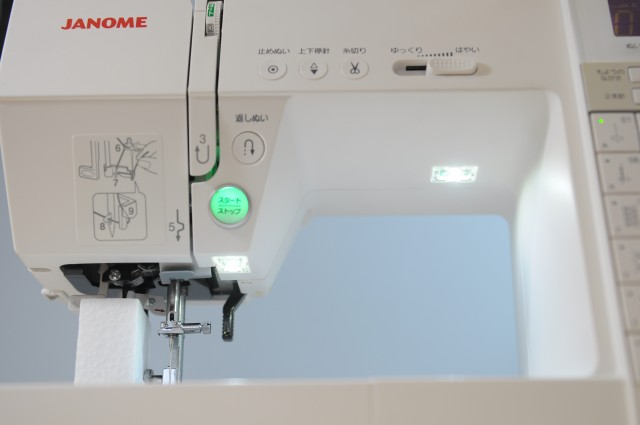
高檔機才會有的雙LED 照明燈，這款 Janome DC6030 也大方的加入此功能
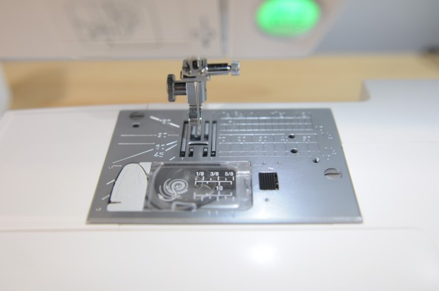
大面積的針板設計，可容納更完整的尺規輔助線，7面送布齒及全新的梭子導線方式 (左方灰色那塊)
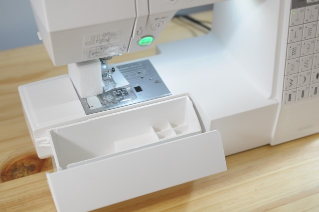
直接內藏配件整理盒，DC6030 處處可見貼心之處
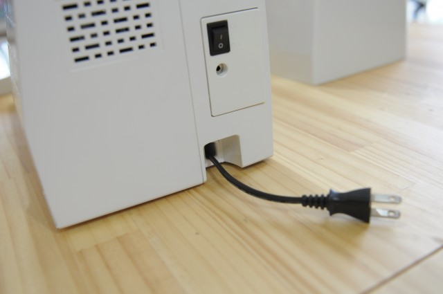
內建自動收線器，在家小空間需要經常收納，可說是相當重要的設計。
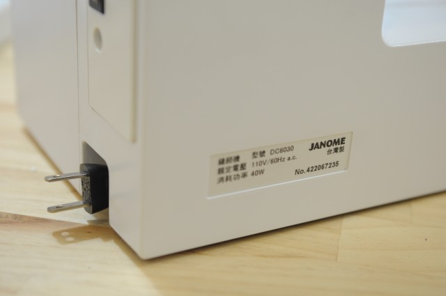
難得看到台灣製造的產品，尤其是這種高價商品，還是會覺得有一些榮耀感，希望繼續保持下去呀
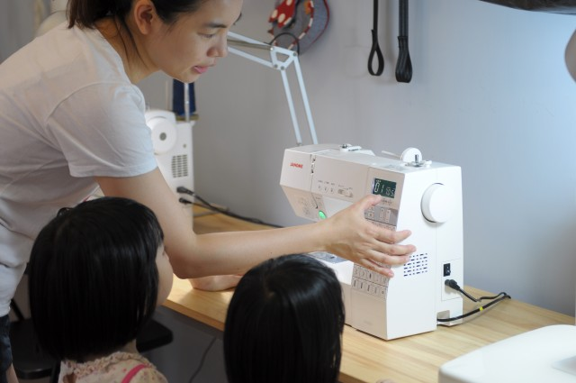
兩姐妹好奇的看媽媽在試新車，什麼時候才能幫阿母開發新品呀？
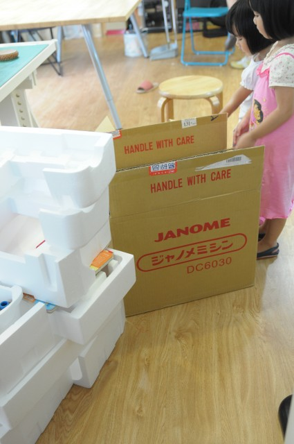
然後就拿著紙箱和保麗龍在一旁玩堆積木和伴家家酒了
先分享開箱的第一眼印象喔，
等Amy使用過一陣子再來分享它的操作性能吧！
想購買或試車
現在跟Amy購買縫紉機，除了可享價格優惠外，還會再贈送Niizo折價券(可使用於手作課程或材料包)。
> 看各機型價格及贈品
暫不訂購！可填表單留email，將主動通知團購訊息
https://forms.gle/eJ5ErjTgP6EjFdWY8
我們每年會開兩次縫紉機團購，通常會在每年的三月及十月份左右，如果暫不急著訂購的話，可先填寫表單，留下正確的email，有開新的團購會主動通知您喔!

{kind=link}
{kind=link}
{kind=link}
{kind=link}
{kind=link}
{kind=link}
{kind=link}
{kind=link}
{kind=link}
{kind=link}
{kind=link}
{kind=link}
{kind=link}
{kind=link}
2018/03/11 at 7:34 下午
請問我是新手想買裁縫機，這台DC6030夠用嗎，主要是要做嬰兒周邊東西，謝謝，價位多少？
2018/03/18 at 10:52 下午
這台很適合新手喔，代購價是26000，會送1000元的課程或材料包的折價券喔，有需要可以mail給我～
[email protected]
2017/10/19 at 1:09 下午
請問DC6030可以車防水布嗎？與 1600PQC很難抉擇。
2017/11/30 at 10:08 下午
兩台都是換上防水布的壓腳，就能車縫防水布喔。
6030是電腦車，有30種花樣可以用，1600是單純直線車，除了直線，沒有別的了，價位比較高，看您要車縫的作品是哪類的東西，其實不難抉擇喔～
如果大部分都是車縫厚的作品，又不需任何花樣，價格又能接受，當然推薦買1600喔～
但如果是做一般家用的小物，可能也會需要鋸齒車縫，那推薦6030了～
2017/06/01 at 12:04 上午
Amy老師您好，想請問您DC6030捲梭子有什麼密訣嗎？我捲梭子都會變成上瘦下胖，很冒昧的請教您，因為真的很希望您幫我解惑，拜託您????
2017/08/23 at 9:12 下午
捲梭子時可以先把線繞在梭子上四五圈，再放上去開始捲，如果一切都對，還是上瘦下胖，那可能是捲梭子的部分要帶去維修，試試看喔～
2016/09/30 at 1:00 下午
請問大大DC6030跟4120QDC差別?
2016/10/03 at 11:10 下午
4120QDC我沒有使用過，看起來跟A8000很相近，我先前有用過一陣子A8000，也是一部好車子，使用起來感覺跟6030差不多，馬力、速度和穩定性都很接近，其實這個價位的車子性能應該都很相近，如果你很需要很多的花樣，那4120QDC會比較好，其餘的功能幾乎都跟DC6030是相同的，DC6030的下臂還有一顆LED燈，是很好的設計，如果上述特點對你都沒有什麼差別的話，那就直接看外型跟價格就好嘍，給您參考，有需要可以mail給我喔，謝謝。[email protected]
2016/03/19 at 9:14 上午
妮好 因為喜歡A8000可以繡日文,不適機也ok,請問有代購嗎?謝謝！
2016/03/22 at 9:56 上午
可以代購喔，有需要我們用mail聯繫喔，[email protected]，謝謝。
2016/03/16 at 8:35 上午
請問DC6030和A8000這兩台差別在哪裡?謝謝!
2016/03/22 at 9:58 上午
偉如您好，A8000有電腦繡字的功能，英日數字皆可，花樣很多，6030就是30種花樣，但兩台都有自動切線功能，控制返針的針數按鈕、硬外殼保護罩、和延伸桌面，原廠保固兩年，給您參考，有需要可以用maill與我聯繫喔，[email protected]，謝謝。
2015/12/07 at 9:21 上午
請問你的工作室在哪? 如果在彰化有推薦的學習場所嗎？ Janome DC6030我想學這一台。
2015/12/13 at 9:58 下午
俐穎您好，我的工作室在三峽，很抱歉，彰化我不熟，您可上網查查彰化附近有沒有車樂美的縫紉教室，很抱歉沒有幫上忙。
2015/11/23 at 8:31 上午
請建議哪個機型,適用車一頂約62平方米,用防水帆布車縫露營帳篷?謝謝!
2015/11/23 at 11:04 下午
如果是像天幕那樣的布料，也不厚，我工作室的裁縫車應該都可以車，但要注意車縫過後會有針孔，還是會滲水，需有防水膠條喔。
2015/10/13 at 3:19 下午
請問你DC6030 價錢是26000, 有含輔助桌跟均勻送布壓腳嗎
2015/10/13 at 10:36 下午
有含輔助桌和均勻送布壓腳喔，有需要可以寫mail跟我說喔，謝謝。
[email protected]
2015/11/12 at 2:24 下午
Amy老師
請問車樂美J885妳有賣嗎?
想請問這款機器可以車拼布,防水布或牛仔布料嗎?
現在繼續學進階課程,未來還要學拼布課程,想買J885這款,不知能符合我要的?.
2015/11/13 at 10:21 上午
amy您好~J885我沒用過，但看起來車妳說的那些布料應該都沒問題，價格我可以幫你問問，有需要可以寫mail給我，[email protected]，謝謝。
2015/06/04 at 10:45 下午
請問這台如果車拉鏈時，壓布腳會不會不易抬高 以至於不好車呢？！
2015/06/05 at 1:00 上午
您好~完全不會喔，壓布腳都可以用力再抬的更高喔，請放心。
2015/05/07 at 5:57 下午
妳好，針車若需要維修怎麼辦？
2015/05/12 at 10:48 下午
車樂美門市點在新北市 台北市 高雄市，若是太遠，就用寄的，但運費要自己付喔，保固會有兩年。
2015/04/08 at 12:09 下午
請問現在DC6030還是26000嗎？感謝！
2015/04/08 at 11:13 下午
是喔，有需要再麻煩mail給我喔，[email protected]，謝謝。
2015/03/28 at 9:58 上午
是否可以到工作室看DC6030及A8000機型, 以確認那種機型適用於我!
2015/03/30 at 10:25 下午
您好，歡迎來工作室試車，我的工作室在三峽喔。
但目前工作室已經沒有A8000了，或許您可考慮DC6030，或者也在試試其他台裁縫車，有想要過來再發mail跟我約時間喔，我再把詳細地址給您，謝謝。[email protected]
2015/03/27 at 6:38 下午
妳好
這台多少?
我的需求是能做拼布
能車包
偶爾可以做洋裁
還可以車厚帆布跟厚皮革
這台聲音大嗎?
這台可以能符合嗎?
謝謝哦
2015/03/30 at 10:31 下午
您好，基本上家用車都不太能車厚皮革，這樣太傷車，除非說的是局部的小配片，那就ok，但還是建議挑選軟皮比較好~
這台裁縫車很安靜，車厚帆布很ok，我的愛自由後背包就是用這台車完成的，不會費力。
洋裁一定可以，但拼布的部分，不知您是否會用到很多花樣，這台的花樣只有30種，這部分就要看您的需求了。
有需要可直接用mail跟我聯繫喔，[email protected]。謝謝。
2014/11/20 at 11:46 下午
請問若是車8層的厚帆布、或者石蠟帆布，馬達力量ok嗎？謝謝
2014/11/21 at 9:59 上午
DC6030的規格都比J760高階，8層的厚帆布、或者石蠟帆布都是可以勝任的喔。
2014/11/14 at 11:02 上午
請問:3160QDC和DC6030差在哪兒?
2014/10/14 at 5:11 下午
老師，請問760的價位多少？我想要從兄xl2600升級！這台適合嗎？
2014/10/14 at 10:54 下午
760的售價是15500，會送1000元的課程或材料包的折價券，760是最基本款的電腦車，很實用，給您參考囉。有需要歡迎寫mail給我，[email protected]，謝謝。
2014/09/24 at 12:57 上午
老师您好，我想买一台能够车皮料的缝纫机，请问760可以胜任么？
谢谢您！
2014/09/26 at 11:06 下午
viki您好，家用裁縫車通常是車布用的，可車薄的軟皮，但可能不會太漂亮，且若是常常拿來車皮料，可能會傷車，建議還是買可車皮料的工業裁縫車會比較好喔，給您參考。
2014/08/18 at 12:53 下午
林老師
午安
請問，我有一個LESPORTSC包，他很輕，我想改造成媽媽包
相加底板及加分隔內袋，我應該從何著手，所需材料那邊可購買
謝謝您
2014/08/25 at 11:18 下午
您好，沒有縫紉基礎的話，可以找人幫忙修改，如果真想自己弄的話，建議用手縫的比較好控制，這邊有我做的教學 https://www.youtube.com/playlist?list=PL45C166EE3BA07FFB。
材料大概就需要針、線和布了，布在一般拼布教室都可以買的到，如果方便到永樂市場的話，那邊很多布可以多問多比較，也有很多專門代工改包包的師傅，一次去就可以搞定。
2014/08/16 at 12:06 上午
請問老師janome760可以密針縫及均勻壓棉車嗎
2014/08/18 at 7:57 下午
筱蘋您好,760可以密針縫,均勻壓布腳也可另外加購,給您參考囉.